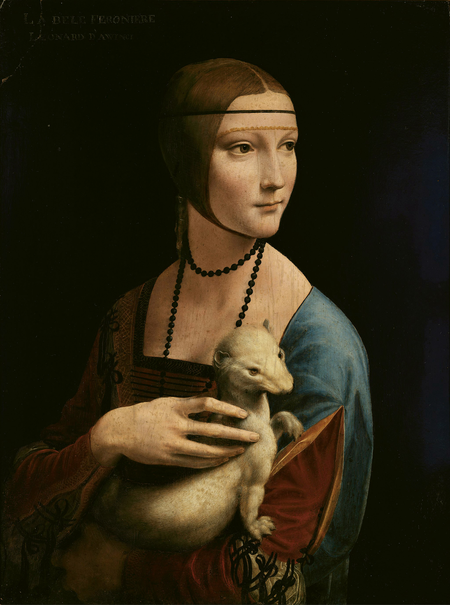

Leonardo Da Vinci
La Gioconda
La Gioconda ha sido considerada como el cuadro más famoso del mundo. Su fama se debe probablemente a las múltiples referencias literarias, a las diversas hipótesis sobre la identidad de la protagonista y al espectacular robo del que fue objeto el 21 de agosto de 1911. Es además la última gran obra de Da Vinci. Después de terminar el cuadro, Leonardo llevó su obra a Roma y luego a Francia, donde la conservó hasta su fallecimiento en su residencia del castillo de Clos-Lucé.

Otras obras de Leonardo
Salvator Mundi

La Virgen, el Niño Jesus y Santa Ana

La Dama del Armiño
La última cena